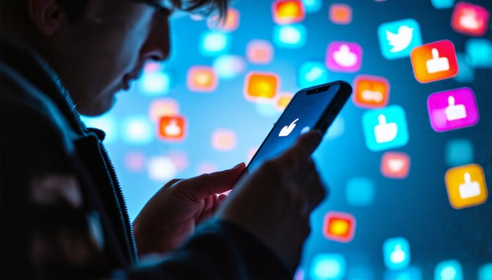

L'impact positif et négatif des réseaux sociaux sur les étudients
À PROPOS
Réseau social (nom, masculin) : désigne un site internet ou une application mobile permettant de développer des interactions sociales, de se constituer un réseau de connaissances, d'amis ou de relations professionnelles, avec lequel on interagit en temps réel

Vous trouvez ici:
Les avantages
Les inconvenients
EFFETS UR LA SANTE MENTALE
SOLUTIONS
SUPPORTS
FIN
Important:
Langues:
Arabe :Avancée
Francais :Avancée
Anglais:Avancée
Italien : Débutante
Coréen: Débutante
Compétences personnelles::
bonne communication
esprit d'équipe
sens de l'organisation
Responsabilité
Créativité
Persévérance
INFORMATIQUE
Notepad++
html et CSS
Python
Powerpoint
Word
Centres d'intérêt
Jeux vidéo, jouer et développer
Musique, Lire , écrire
Voyager , aller au cinéma
Sport (lesmills , yoga, musculation)
Informatique en général
Les réseaux sociaux occupent une place centrale dans la vie moderne des individus, influençant de manière significative leur quotidien, leurs interactions et même leur perception du monde. Leur impact est multidimensionnel et peut être examiné
sous différents aspects : sociaux, psychologiques, économiques et même politiques.
Voici quelques façons dont les réseaux sociaux façonnent la vie des hommes
1. Interaction sociale et communication
Les réseaux sociaux permettent aux individus de maintenir des liens sociaux, d’interagir avec des amis, des membres de la famille ou des collègues, même à distance. Ces plateformes facilitent la communication en temps réel,
rendant la connectivité instantanée et mondiale. Cela crée une forme de communauté virtuelle où
les gens peuvent partager leurs idées, leurs expériences et leurs émotions.
Les réseaux sociaux sont une source majeure d’information pour de nombreuses personnes, qu’il s’agisse d’actualités, de divertissement, ou même de contenu éducatif. Les informations circulent rapidement et peuvent influencer les opinions publiques. Les utilisateurs ont également la possibilité de créer et de diffuser du contenu, ce qui permet à des voix diverses d’être entendues, bien que cela puisse aussi entraîner la propagation de fausses informations
 Instagram
Instagram Email
Email